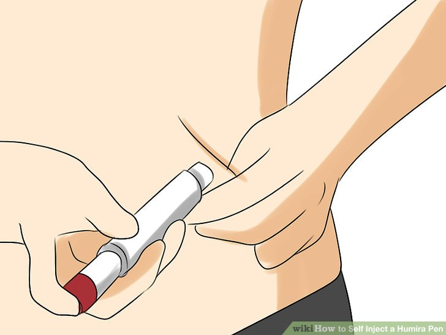
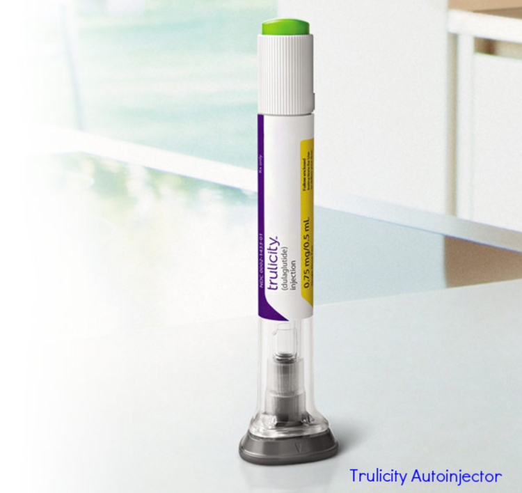
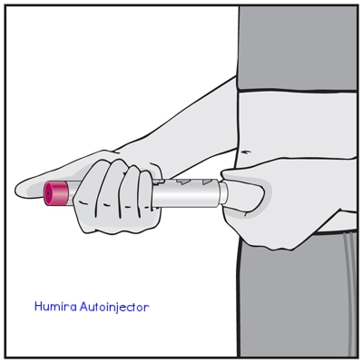
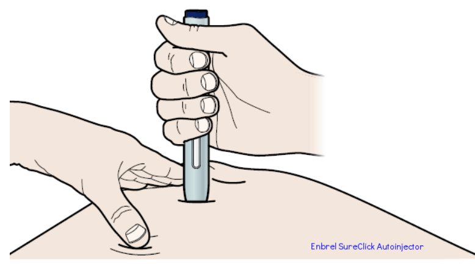
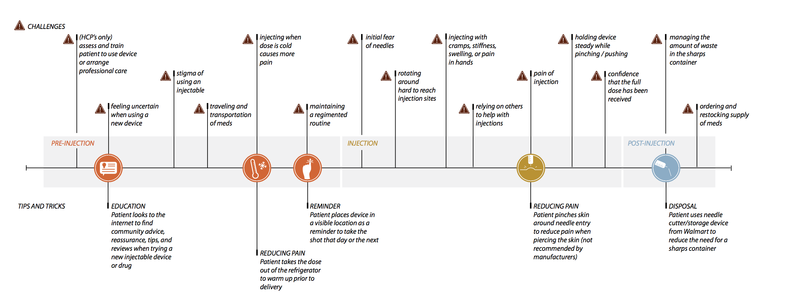
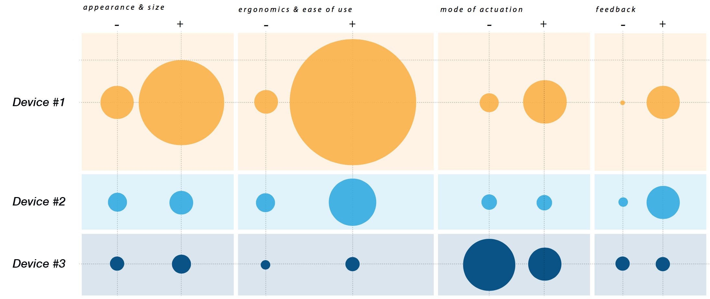
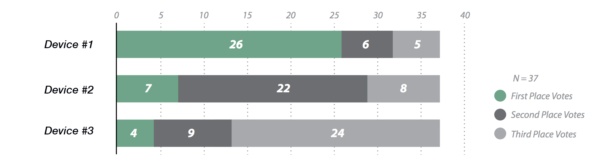
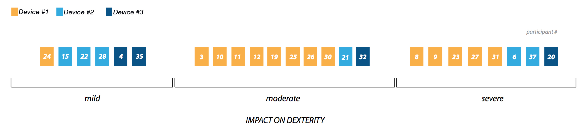
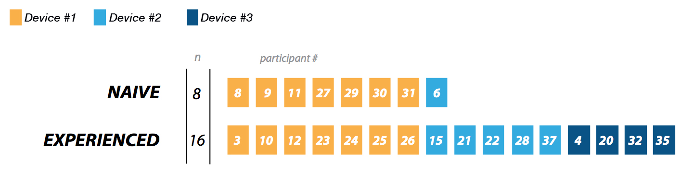

Self-Injection Device | Qualitative Research & Usability

My Responsibilities:
Study Design, Protocol Development, Participant Recruitment, Moderation, Note-taking, Data Analysis, Final Report, Writing
My Role:
User Researcher, Usability Tester
Client: Pharma-C*, a pharmaceutical company
Methods:
User Interviews, Usability testing, Simulated Use, Contextual Inquiry, Cognitive Walkthrough
* Due to the confidentiality of this project, this research summary is adapted with false company names, alternative generic devices, and omits proprietary details
About
The client, Pharma-C, had already released its drug to the market but it was only available for use with a syringe and
vial. The client wanted to select the ideal self-injection device to make treatment easier for the target patients. To
do so, the client needed to understand how patients were currently using their syringes and investigate how potential
users might feel about the 3 off-the-shelf devices being considered.
Research Goals
Understand the self-administration landscape
Explore the benefits and drawbacks of the 3 self-injection devices through metrics and qualitative data
The Challenge
Select a single device that best suits the needs of potential users, is easy to use, and improves the self-administration experience.
Methodology
Participants
The target users were identified to be:
patients with autoimmune diseases
healthcare professionals who worked with these patients
I created a participant recruitment screener (questionnaire) to be used by our 3rd party recruiting firm. We were looking for 25 patients who:
ranged in age and gender
experienced an autoimmune disease
ranged in dexterity limitation (a side effect of the disease)
ranged in experience level with self-administration (naïve, syringe/vial, pre-filled syringe, injector).
We scheduled 15 healthcare professionals, nurses and caregivers, who ranged in treatment experience and had varying experience levels with different self-administration methods.
The types of participants we recruited would be integral to answering these questions:
How would the disease’s impact on lifestyle influence someone’s preferred method of administration?
e.g. "How would a rheumatoid arthritis patient’s dexterity limitations influence her administration method preference?"
How would disease symptoms affect device preference and use?
e.g. "How would a lupus patient’s feeling of lack of control impact his device preference for self-injecting?"
To answer these questions later, the team would need to cross-reference research data and participant feedback with the participant’s device experience and dexterity limitation. To prepare, we mapped patient participants by these factors:
Interviews
Interview structure:
Interviews were conducted as 1-on-1 sessions at a research facility and lasted 60-75 minutes.
Background: asked questions regarding medical conditions, self-administration experience, experience working with patients
Current Context: discussed impact of disease on life, current treatment methods
Device Assessment: participant received training and performed 2 injections with each device on a foam pad, looked for impressions, difficulties, and use errors
Device Comparison: asked participant to compare 3 devices and rank by preference
Wrap-up: thanked and compensated participant
Stimuli
During the usability portion of the interview, participants were shown 3 devices: (these were not the actual devices used)
Device #1: push down on the top
Device #2: press the end button
push against the skin



Aside from appearance, the devices differed in their methods of activation.
Findings
Disease Landscape
We asked participants to describe their experiences with their medical conditions. We explored each of the disease landscapes to understand how the conditions affected the participants’ everyday lives. (Diseases anonymized due to
confidentiality).
AUTOIMMUNE DISEASE #1 & #2
Pushes someone into early retirement
Makes daily tasks like showering, cooking, and driving difficult
that involve dexterity like playing piano can be impossible
AUTOIMMUNE DISEASE #3
Fatigue and ‘brain fog’ make it difficult to function in the morning
Body stiffness make it painful to walk
Finger locking can affect everyday tasks like cooking and dressing
AUTOIMMUNE DISEASE #4
Person becomes lost mid-conversation
Hands lock up and experience tremors
Treatment Needs & Goals
We used participant experiences to write a visual story about the self-administration process.

Participants discussed their motivations and goals when self-administering the treatments for their conditions.
They want to:
Reduce injection time and steps
Experience less pain when injecting
Receive the complete dose
Minimize disruption to their day
Maintain a regimented treatment routine
Feel confident and in control of the treatment
Device Usability Assessment
An understanding of the current context would not be enough to choose 1 of the 3 devices to move forward with.
Therefore, we had participants perform injections on a foam pad with each of the devices and discussed the following 4 factors:
MODE OF ACTUATION: thoughts on activation, feeling of control
FEEDBACK: knowing the injection began and completed
We analyzed the findings and compared the 3 devices using visual frequencies:

Size of the circles corresponds to the number of participants who mentioned characteristics related to these attributes.
We had participants rank the 3 devices:

We found that participants with moderate to severe dexterity limitations were more likely to prefer Device #1 due to its easier activation:

Injection-naïve (those without injection experience) were more likely to prefer Device #1, mainly because it was easier to learn to use, appeared less intimidating, and was easier to activate:

RECOMMENDATION
We found that Device #1 was the ideal choice to move forward with.
Healthcare professionals strongly preferred to train patients on it
Patients with moderate-severe dexterity limitations strongly preferred it (and these represented the likely users)
100% of injections were successful with Device #1
Participants felt more comfortable and in control when injecting with Device #1
IMPACT
AUTOIMMUNE PATIENTS...
interact with an approachable, less intimidating injection device
give the injection with less difficulty due to ergonomic shape
feel more in control when giving themselves medication
be confident they are receiving all the medication
NURSES AND CAREGIVERS...
can help patients reach higher levels of autonomy
train patients to give themselves injections with less confusion
have higher patient adherence to the medication
THE CLIENT...
has fewer patient complications with the syringe/vial system
has higher patient adherence to the medication
has medication more likely to be prescribed by practitioners